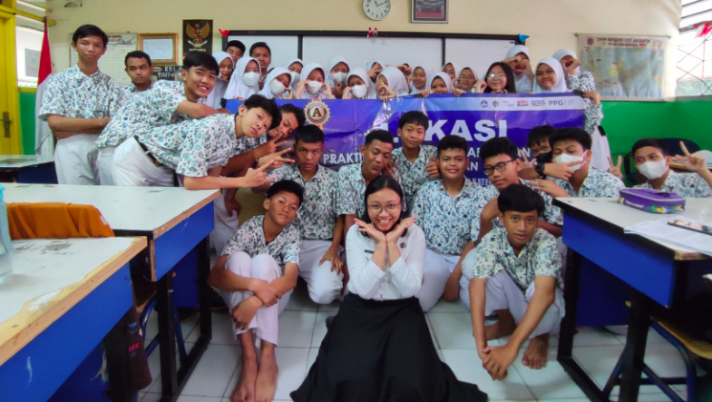

NGERJAIN TUGAS DENGAN LEBIH BAIK, MANFAATIN TOOLS DIGITAL YANG TERSEDIA
Oleh: Tyas Kartiko Sutawi, M. Pd & Rebecca Sumanto. Hallo insan pendidikan SMP Negeri 277 Jakarta ! Tau kan kalau tugas tu adalah tanggung jawab yang dikasih guru kepada murid buat diselesaikan di luar lingkungan sekolah ? Tugas punya peran yang penting loh buat kalian dalam proses pembelajaran di sekolah. Pertama-tama, tugas bakal bantuin kamu […]
Peserta Didik berprestasi di bidang Akademik diberikan kepada anak yang diterima di SMA Muhammad Husni Thamrin sebanyak 2 orang. Siswa berprestasi di kelas masing-masing sebanyak 21 orang. Masing-masing kelas 3 anak yang terpilih. Sedangkan bidang non akademik ada 6 anak. Mereka berhasil masuk PPDB jalur prestasi. Kegiatan yng dilakukan sederhana dihadiri para orang tua yang […]
Kegiatan Jambore Adiwiyata Nasional tahun 2023 di Baturraden
Kegiatan Jambore Adiwiyata Nasional tahun 2023 berlangsung di Baturraden selama 2 hari. Hari pertama dilaksanakan di SMP Negeri 2 Baturraden. Acara dibuka oleh bupati Banyumas bapak… dengan ditandai pelepasan 2 ekor burung dara oleh kader Adiwiyata salah satunya dari Jakart Utara Bagas (ketua OSIS SMP Negeri 277).Kegiatan di SMP N Baturraden meliputi kegiatan 6 Aksi […]
Dalam memperingati Hari Raya Idul Adha tahun 2023 SMP Negeri 277 mendapat hewan qurban dari Astra berupa 1 ekor domba. Karena SMP N 277 sebagai Sekolah Adiwiyata provinsi DKI Jakarta tahun 2023.Kegiatan pemotongan domba dilakukan bersama guru, OSIS, Tim Pokja Adiwiyata, Tim Pokja SSK. Selamat dan sukses buat SMP Negeri 277 tetap Bersinar seperti matahari […]